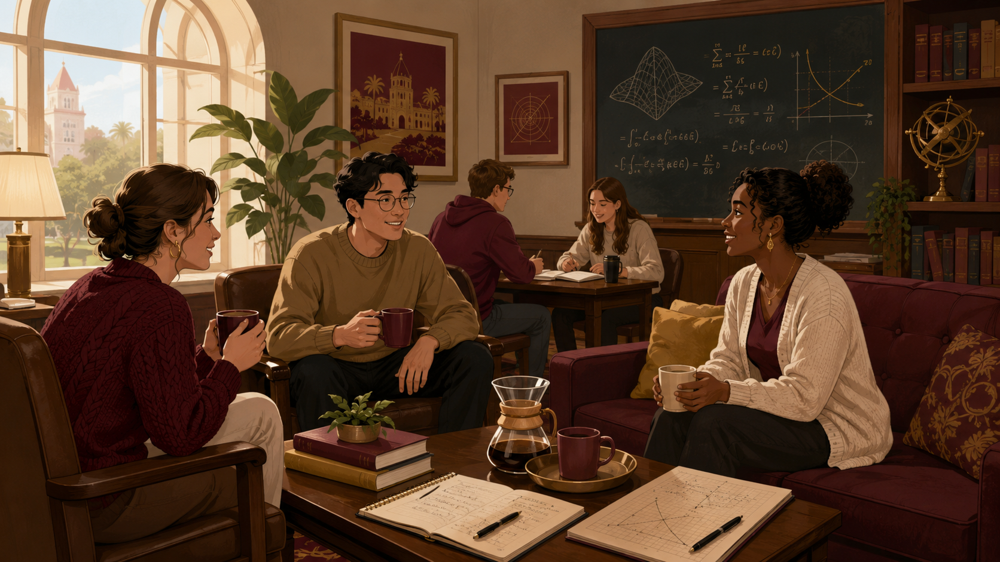
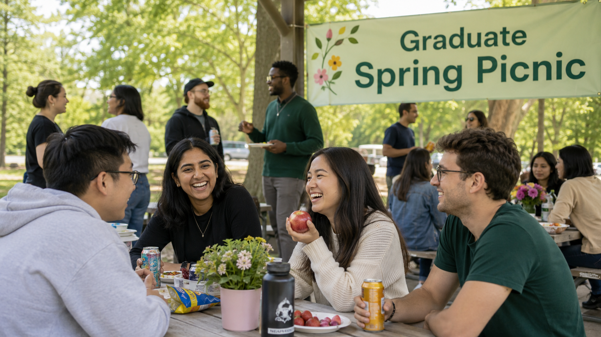
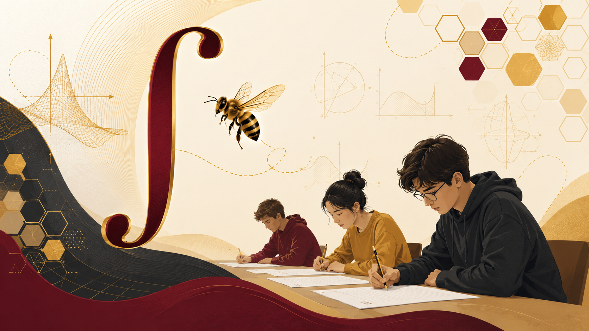
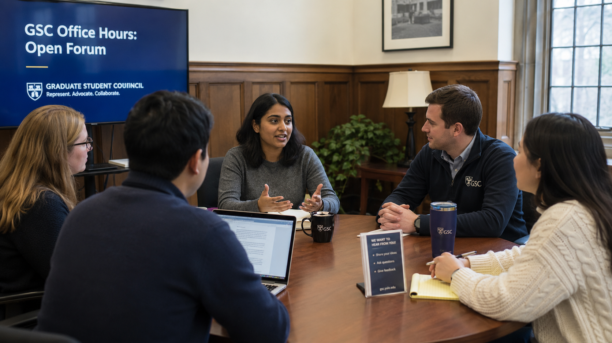
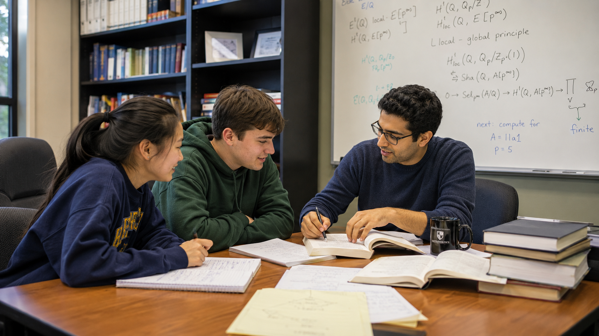
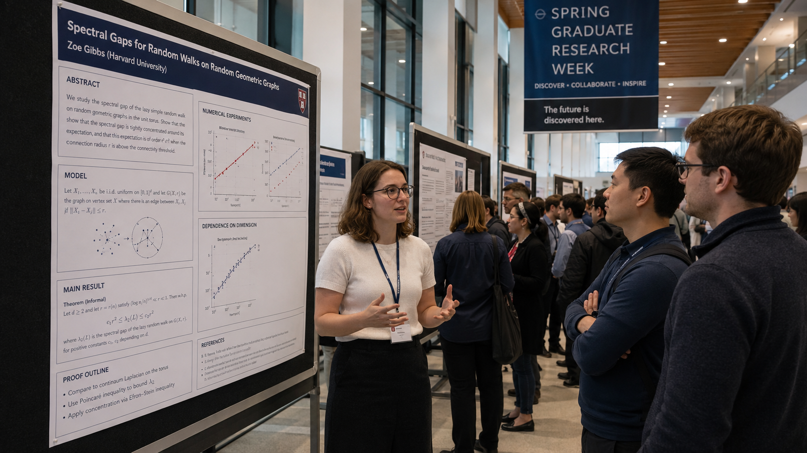

01Community · Recurring
GSC Coffee/Tea Hour
Come and relax in the student lounge with a cup of tea or coffee and meet other graduate students.
Initiatives & events
From informal coffee conversations to research presentations and undergraduate mentoring, GSC initiatives create places to meet, exchange ideas, and participate in the life of the department.

01Community · Recurring
Come and relax in the student lounge with a cup of tea or coffee and meet other graduate students.

02Community · Spring
Enjoy a picnic lunch and the amenities of the FSU Reservation with the graduate mathematics community.

03Competition · Mathematics
Undergraduate students are invited to test their integration skills for a chance to win cash prizes.

04Representation · Student voice
Questions? Concerns? Suggestions? Come chat with us. The open forum creates a direct and informal route to the council.

05Mentorship · Academic initiative
The Directed Reading Program pairs graduate mathematics students with undergraduates interested in deeper mathematical study and research-style exploration.
It gives undergraduates a focused route into advanced topics while giving graduate students an opportunity to develop mentorship and mathematical communication experience.

06Research · Graduate scholarship
An opportunity for graduate students to present and share their research with the mathematics community.
Student-led programming
Bring a proposal, suggest a format, or share a need that the council should consider.
Meet the council